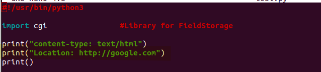
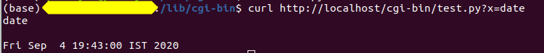
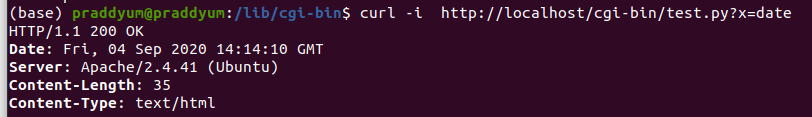

Day7
Objective
Learning API
New terms
If we ant to interact with a OS we need programming language and programming language provides 4 ways
>CLI
>WebUI
>GUI
>MobUI
Headers : These are used by browsers to determine various things like content type and other status codes etc.
Location header helps in determining the redirection url

Commands
curl <url> //to ineract with website via CLI

curl -i <url> //returns headers
